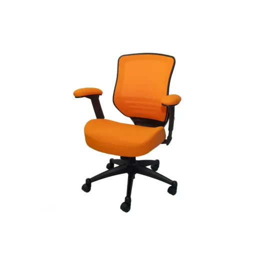
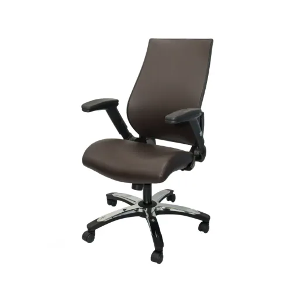

Oficina · Modelo SITD325
Escritorio de Oficina SIT, Base de Acero con Pasacable, Color Nogal. SIT-D325
L 4,342.55
En iOffice
Precio en cada tienda
| Tienda | Precio | Antes | Disponibilidad | |
|---|---|---|---|---|
| iOffice | L 4,342.55 | — | Disponible | Ver en tienda › |
Precios referenciales tomados de cada tienda el 28 de noviembre de 2026. El precio válido es el que muestra la tienda al comprar.
Historial de precio
Lo seguimos desde el 16 de noviembre. Precio más bajo registrado: L 4,342.55 en iOffice (16 de noviembre), igual que hoy. El precio no ha cambiado en ese tiempo.
Descripción
El Escritorio de Oficina con Extensión en Nogal y Pierna de Acero es una solución práctica y moderna para quienes necesitan un espacio de trabajo cómodo y organizado. Su tamaño ofrece una superficie amplia para computadora, documentos y accesorios. El acabado en nogal brinda un toque cálido, mientras que la estructura de acero asegura estabilidad y durabilidad para uso diario en oficina o en casa.
Características
Medidas 140 W x 60 H cm
Extensión en acabado nogal para un estilo moderno y elegante.
Pierna de acero que proporciona firmeza, estabilidad y mayor resistencia.
Diseño funcional que optimiza el espacio de trabajo.
• Panel de privacidad
• Dos pasacables
Otros sillas y escritorios Oficina
 Silla para Oficina Semi Ejecutiva Bruno LB-8817 NegroL 4,400En Sycom
Silla para Oficina Semi Ejecutiva Bruno LB-8817 NegroL 4,400En Sycom Escritorio de Oficina SIT, Base de Metal, 3 Cajones, Gestión de Cables, Color Beige + Blanco. SIT-D298L 4,278En iOffice
Escritorio de Oficina SIT, Base de Metal, 3 Cajones, Gestión de Cables, Color Beige + Blanco. SIT-D298L 4,278En iOffice Escritorio de Oficina SIT con 3 Cajones con Cerradura. Panel Gris Oscuro y Café. SIT-D295L 4,247.04En iOffice
Escritorio de Oficina SIT con 3 Cajones con Cerradura. Panel Gris Oscuro y Café. SIT-D295L 4,247.04En iOffice Escritorio de Oficina SIT con 2 Cajones con Cerradura, Panel Color Blanco y Base Color Gris. SIT-D405L 4,142.68En iOffice
Escritorio de Oficina SIT con 2 Cajones con Cerradura, Panel Color Blanco y Base Color Gris. SIT-D405L 4,142.68En iOffice
Silla para Oficina Semi Ejecutiva Bruno LB-8810 NaranjaL 3,995En Sycom Silla para Oficina Semi Ejecutiva Bruno LB-8815 BlancoL 3,995En Sycom
Silla para Oficina Semi Ejecutiva Bruno LB-8815 BlancoL 3,995En Sycom Silla para Oficina Semi Ejecutiva Bruno LB-8809F GrisL 4,800En Sycom
Silla para Oficina Semi Ejecutiva Bruno LB-8809F GrisL 4,800En Sycom
Silla para Oficina Semi Ejecutiva Bruno LB-8809F CafeL 4,800En Sycom